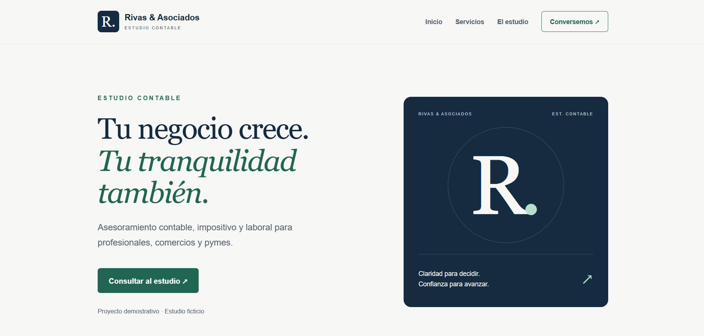
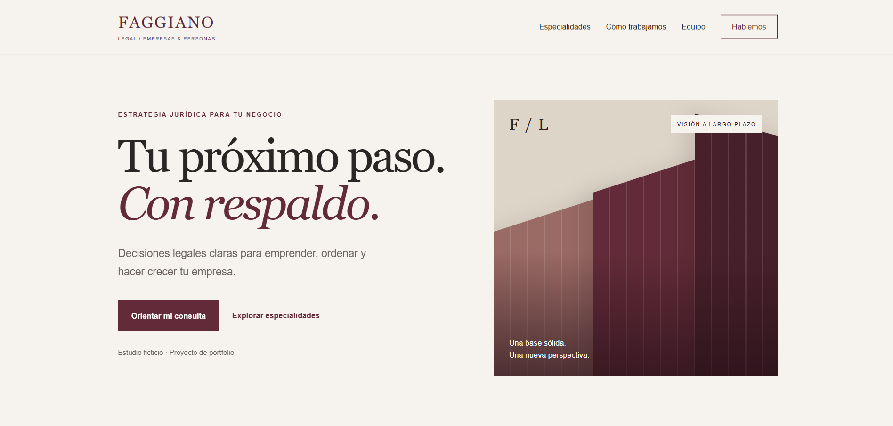

ESTUDIO CONTABLE / DEMO
Rivas & Asociados
Una presentación sobria que organiza los servicios y facilita el recorrido hacia el contacto.
- Diseño adaptable
- Servicios
- Preguntas frecuentes
SANTIAGO RODRIGUEZ / DESARROLLO WEB
Diseño y desarrollo páginas claras, modernas y fáciles de usar para profesionales y negocios.
Diseño web, desarrollo, identidad y experiencia móvil.
01 / PROYECTOS SELECCIONADOS
Dos proyectos demostrativos para explorar distintas identidades y formas de presentar un negocio.

ESTUDIO CONTABLE / DEMO
Una presentación sobria que organiza los servicios y facilita el recorrido hacia el contacto.

ESTUDIO JURÍDICO / DEMO
Una identidad editorial con especialidades interactivas y un orientador que prepara la consulta por WhatsApp.
Ambos proyectos representan estudios ficticios. Son muestras de diseño y desarrollo, no trabajos para clientes reales.
02 / QUÉ PUEDO HACER POR VOS
Definimos qué necesitás comunicar y qué querés que haga una persona cuando visite tu página.
Presentá tu negocio, tus servicios y tu forma de trabajar en un sitio con identidad propia.
Profesionales · Estudios · Negocios
Una página centrada en una propuesta, un evento o un servicio, con un recorrido directo hacia la consulta.
Lanzamientos · Campañas · Eventos
Revisamos tu web actual y definimos mejoras en presentación, navegación y experiencia móvil.
Diseño · Contenido · Usabilidad
Adaptación a celulares, navegación clara, enlaces de contacto y configuración básica de títulos y descripciones. El alcance final se acuerda en la propuesta.
03 / CÓMO TRABAJAMOS
Conocemos tu negocio, tu público y lo que necesitás de la web.
Te presento una propuesta con secciones, tareas, plazos y presupuesto.
Desarrollo la página y revisamos juntos el diseño y el contenido.
Probamos la versión final y coordinamos su publicación y entrega.
04 / QUIÉN ESTÁ DETRÁS
Estudio Ingeniería en Sistemas de Información en la UTN FRBA y desarrollo proyectos que combinan diseño y programación.
También trabajo en la administración de un negocio familiar. Esa experiencia me ayuda a pensar una web desde las necesidades de quien la usa y de quien lleva adelante el negocio.
Mi propuesta es trabajar con comunicación directa, un alcance definido y atención a los detalles.
05 / TU PRÓXIMO PROYECTO
Contame a qué te dedicás y qué te gustaría lograr con tu web. Podemos empezar por una conversación.
Hablemos por WhatsAppEl enlace abre WhatsApp. Podés editar el mensaje antes de enviarlo.